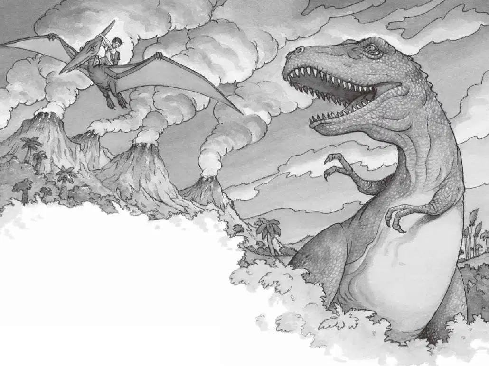

无齿翼龙降落到地面。
它用明亮而警觉的眼睛盯着杰克。
“我该怎么办呢？爬到它背上去？可是我太重了。”杰克想。
这时，他看见霸王龙正在朝这边冲来，巨大的牙齿在阳光下闪闪发亮。
“好吧，”杰克对自己说，“别想太多！做就对了！”
杰克把书塞进背包，然后爬到无齿翼龙的背上，紧紧地抓着它的冠。
无齿翼龙向前跑了几步，展开双翅，一下就飞离了地面！开始的时候，它的身体还左右摇晃了几下，杰克差点儿摔下去。但它很快就调整好了平衡，稳稳地飞上了天空。
杰克往下看去，那只霸王龙正抬头盯着他，牙齿被咬得嘎吱吱地响。
无齿翼龙轻快地飞走了。它飞过山顶，飞过山谷，飞过那些鸭嘴龙，飞过挤满了恐龙宝宝的窝。
然后，无齿翼龙翱翔到平原的上空，只见那只三角龙正在高高的野草地里吃草。
杰克感觉自己像一只鸟，风呼呼地吹拂着他的头发，空气清新而甜蜜。
杰克欢呼着，大笑着。他简直不敢相信，自己竟然骑着一只会飞的古代爬行动物在空中飞翔！
无齿翼龙飞过河流，飞过蕨草地和灌木丛，然后驮着杰克降落在那棵大橡树下。
杰克从无齿翼龙的背上滑下来，落在地上。
顷刻，无齿翼龙又一次起飞了，身姿轻盈地飞上了天空。
“再见，亨利！”杰克喊道。
“杰克，你没事吧？”安妮从树屋里探出头大声问道。
杰克把眼镜往上推了推，目不转睛地盯着无齿翼龙。
“杰克！”安妮叫他。
杰克抬头看着安妮，脸上露出了微笑。
“谢谢你救了我。”杰克说，“刚才真是太有趣了。”
“谢我干吗？应该谢亨利！”安妮说，“快爬上来吧！”
杰克想要站起来，但两条腿直打哆嗦，他感到有点儿头晕。“快点儿啊！”安妮喊道，“它过来了！”
杰克扭过头去，看见霸王龙正径直朝他冲过来。杰克赶紧跑向绳梯，急速往上爬。
“快啊！快啊！”安妮尖叫。
杰克三下并两下爬到树顶，手忙脚乱地钻进树屋。

“它朝这棵树冲过来了！”安妮喊道。
霸王龙重重地撞在橡树上。树屋剧烈地摇晃着，就像风中的一片树叶。
杰克和安妮跌倒在书堆里。
“快许愿回家呀！”安妮喊。
“我们需要那本书！宾夕法尼亚的书！”杰克大叫，“它在哪儿？”他们俩焦急地在书堆里寻找。
“找到了！”杰克一边喊，一边抓住那本书，飞快地翻到有蛙溪的那一页。
杰克指着书里的那幅图片，大声说：“请带我们回家！”
起风了。杰克紧紧地抓着安妮，闭上眼睛。
树屋开始旋转，越转越快。
然后，一切都静止了。
完完全全地静止不动了。